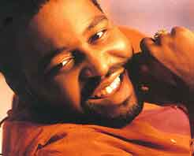

Recuerdo a Gerald levert
La tristeza de Stevie Wonder frente a la desaparición de manera irreversible de grandes amigos, artistas, y familiares, han sido una constante en los últimos años. Sólo hay que recordar la muerte inesperada de su
madre, la de su hermano, o la de su ex-mujer
Syreeta. Compañeros de profesión como
Michael Jackson,
Whitney Houston,
Pavarotti o
Luther Vandross por nombrar algunos, han tratado de impregnar y aprisionar con una fria y húmeda niebla el corazón de Stevie Wonder.
Stevie siempre ha expresado de la mejor manera que él sabe su cariño y recuerdo. Hombre emotivo y lleno de sensibilidad, su voz y su música es el cauce por donde transcurren los hilos invisibles del cariño y el amor.
De esta manera podemos contagiarnos de la emotividad de uno de esos momentos que desearía no hubiesen sucedido; su presencia junto a
Eddie Levert -componente de los O'Jays- recordando a su hijo
Gerald Levert.
También gran cantante, murió el 10 de noviembre del 2006 cuando tenía tan sólo 40 años de edad. Su desaparición física hace brotar esos momentos donde la magia de la música se convierte de nuevo en el medio de transmisión de los sentimientos más profundos. Un Stevie Wonder conmovido interpreta con el corazón un bello tema perteneciente a su álbum de 1980 Hotter Than July.
Es la canción "All I Do" -compuesta por Stevie en los años 60- haciendo de cadena de transmisión del desgarrador lamento por la muerte de un amigo, y del dolor de un padre enfrentándose a uno de los peores momentos que puede padecer, la muerte de un hijo.

Se pueden sentir y palpar las emociones, se puede sentir el alma de Gerald Levert descansando en paz, sabiendo que hay personas en el mundo que lo quieren y sienten su desaparición, comprendiendo que es un proceso más de la vida sin el cual muchas cosas dejarían de tener significado. Una vida que en ocasiones es muy corta..., pero no por ello impide dejar un poso de amor imborrable en muchos corazones, gracias sobre todo al recuerdo de sus interpretaciones, como fue el dia que homenajeó; a Stevie en los BET Walk of Fame. Su inolvidable voz y presencia interpretando también "All I Do".


Letra All I Do
You made my soul a burning fire
You're getting to be my one desire
You're getting to be all that matters to me
And let me tell you girl
I hope and pray each day I live
A little more love I'll have to give
A little more love that's devoted and true
'Cause all I do is think about you
Tú haces de mi alma un fuego ardiente
tú has conseguido ser mi único deseo
tú has llegado a ser todo lo que me importa
Y déjame decirte niña
Espero y rezo cada día que vivo
un poco más de amor voy a tener que dar
Un poco de amor más que es devoto y de verdad
Porque todo lo que hago es pensar en ti
All I do
Oh baby
Is think about you
Think about you baby
All I do
M-m-m-m
Is think about you
Todo lo que hago
Oh pequeña
Es pensar en ti
pensando en ti pequeña
Todo lo que hago
Mmmm
Es pensar en ti
Baby just suppose I should happen to cross your mind
And by some chance a boy like me you're really been trying to find
Well let me tell you girl
Think of how exciting it would be
If you should discover you feel like me
If you should discover this dream is for two
We'll I'm gonna tell you girl
I'd light a candle every day
And pray that you'll always feel this way
And pray that our love will forever be new
'Cause all I do is think about you
Pequeña yo sólo me propongo que debe suceder para cruzar tu mente
Y por alguna suerte de un niño como yo, tú eres realmente lo que estaba tratando de encontrar
Pues déjame decirte niña
Pienso en lo excitante que podría ser
Si tú descubres que tú sientes como yo
Si tú descubres que este sueño es para dos
Vamos que voy a decirte niña
yo enciendo una vela todos los días
Y rezo para que siempre lo sientas de esta manera
Y oro para que nuestro amor será para siempre renovado
Porque todo lo que hago es pensar en ti
All I do
Oh baby
Is think about you
I think about you
All I do
Yeah, baby
Is think about you
Todo lo que hago
Oh pequeña
Es pensar en ti
pensando en ti pequeña
Todo lo que hago
Mmmm
Es pensar en ti
Gonna tell you girl
I'd light a candle every day
And pray that you'll always feel this way
And pray that our love will forever be new
I'm gonna tell you girl
If I cannot have you for my own
I'd rather be lonely and all alone
I'd rather keep thinking the way that I do
'Cause all I do is think about you
Voy a decirte muchacha
enciendo una vela cada dia
Y rezo para que siempre lo sientas de esta manera
Y oro para que nuestro amor será para siempre renovado
Te voy a decir niña
Si yo no puedo tenerte para mi
Prefiero estar solo y completamente solo
Prefiero seguir pensando en la manera que lo hago
Porque todo lo que hago es pensar en ti
All I do
- Oh baby
Is think about you
- Think about you baby
All I do
- Ou Oh baby
Is think about you
- I think about you baby
All I do
- Yeah baby
Is think about you
- Think about you baby,
All I do
- baby, baby, baby, baby, baby
Is think about you
- All I do is think about you baby
All I do
Is think about you
- I think about cha baby
All I do
- Yeah, yeah, yeah, yeah
Is think about you
- Oh baby, baby, baby
Todo lo que hago
- Oh pequeña
Es pensar en ti
- Piensar en ti pequeña
Todo lo que hago
- Ou, Oh pequeña
Es pensar en ti
- Piensar en ti pequeña
Todo lo que hago
- Yeah pequeña
Es pensar en ti
- Piensar en ti pequeña
Todo lo que hago
- pequeña, pequeña, pequeña, pequeña, pequeña
Es pensar en ti
- Todo lo que hago es pensar en ti pequeña
Todo lo que hago
Es pensar en ti
- Piensar en ti pequeña
Todo lo que hago
- Sí, sí, sí, sí
Es pensar en ti
- Oh pequeña, pequeña, pequeña
I'm thinking baby
'bout you baby
I'm thinking baby
'bout you baby
I'm thinking baby
'give it to me baby
I'm thinking baby
- I'm thinking, thinking, yeah, yeah,
'bout you baby
Yeah, yeah, yeah, yeah, yeah get on down
Estoy pensando pequeña
Acerca de ti pequeña
Estoy pensando pequeña
Acerca de ti pequeña
Estoy pensando pequeña
'Darle a mi pequeña
Estoy pensando pequeña
- Estoy pensando, pensando, sí, sí,
Acerca de ti pequeña
Sí, sí, sí, sí, conseguirlo
All I do
Gotta get on down
Is think about you
- Whoa Whoa Whoa get on down
All I do
- All I do is think about you baby
Is think about you
- I think about you baby
All I do
- Oh baby
Is think about you
- Can you feel can you feel can feel
All I do
- the fire burning can't you feel the birds humming
Is think about you
- Think about you baby, oh oh
All I do
- Can't you feel my love flowing Can't you see my love growing
Is think about you
- Oh
All I do is think about you
Todo lo que hago
Tengo que seguir adelante
Es pensar en ti
- Whoa Whoa Whoa conseguirlo
Todo lo que hago
- Todo lo que hago es pensar en ti pequeña
Es pensar en ti
- Pienso en ti pequeña
Todo lo que hago
- Oh pequeña
Es pensar en ti
- ¿Puedes tú sentirlo, puedes tú sentirlo, puedes sentirlo?
Todo lo que hago
- El fuego quema no puedes sentir el las aves zumbando
Es pensar en ti
- Piense en su pequeña, oh oh
Todo lo que hago
- ¿No puedes sentir mi amor fluyendo ¿No puedes ver a mi amor cada vez mayor
Es pensar en ti
- ¡Oh!
Todo lo que hago es pensar en ti